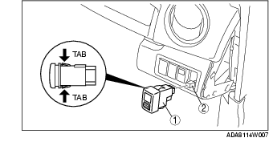

Headlight leveling switch removal/installation
1. Disconnect the negative battery cable.
2. Remove the side panel.
3. Remove in the order indicated in the table.

4. Install in the reverse order of removal.
Headlight Leveling Switch Removal Note
1. Insert your hand into the dashboard from where the driver-side side panel was removed, and squeeze the tabs of the headlight leveling switch.
2. Pull the headlight leveling switch outward to remove it.